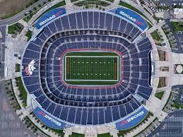
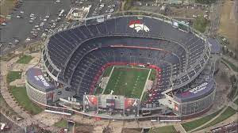
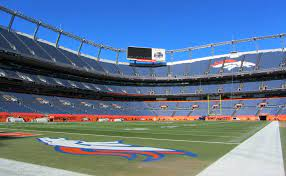

DENVER STADIUMS
Mile High Stadium (originally Bears Stadium until 1968)
was an outdoor multi-purpose stadium located in
Denver, Colorado from 1948 to 2001.
Empower field opened in August 2001 and has been the Broncos Stadium ever since.
  